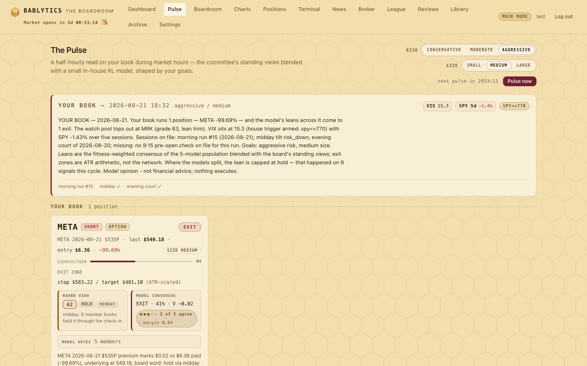

Engine · every half hour
The Pulse
Half-hourly model views on your own book, blended from the board's standing reads and a five-model actor-critic population — research output with no order path of any kind.
What the Pulse is#
The Pulse is the one part of Bablytics that reads your positions, and it does so every thirty minutes. On weekdays the scheduler job pulse_cycle fires at :00 and :30 and runs only inside the 9:30–16:00 ET session (the job checks the clock and the pulse_enabled setting, default on). Each cycle: read your book, read the day's board sessions, build a 31-number state for every position, ask five small neural networks what they would do, blend their consensus with the board's freshest stance, write a one-paragraph briefing about your tickers, and persist the payload so the Pulse tab and the nightly self-court can read it back.
Every payload and every surface carries the same sentence: Model opinion — not financial advice; nothing executes. It is literal — see No execution path, the most important section on this page.

What counts as your book#
The engine assembles the book from three places and dedupes by ticker (manual entry wins over a CSV holding, which wins over a taken lead):
- Open manual trades — anything you logged with Log a trade on Positions that has no exit yet. Option contracts keep their label; their unrealized % is measured on the contract's premium mark.
- CSV holdings — rows from a Schwab or generic CSV upload. A negative quantity is read as a short.
- Taken leads — cards you marked TAKEN, opened at the lead's briefing price from that run date.
If the book is empty the Pulse runs in watch-only mode over the day's top eight leads by final grade (those not already in your book). Watch leads get the same model view, minus the position-only columns — P&L, days held, distance to stop and target.
The goal matrix#
Two segmented controls set your stated goals — risk (conservative / moderate / aggressive) and size (small / medium / large) — persisted as the settings pulse_risk and pulse_size (defaults moderate / medium). Nine combinations; they change three concrete things:
| Profile | Stop (ATR) | Target (ATR) | Training penalty λ | Size behaviour |
|---|---|---|---|---|
| conservative | 1.0 | 1.5 | 2.0 | size hint steps down one notch when VIX > 16 |
| moderate | 1.5 | 2.5 | 1.0 | size hint = your size setting |
| aggressive | 2.0 | 4.0 | 0.4 | size hint = your size setting |
The multiples and the penalty live in one module (pulse/goals.py) and are imported by the engine, the RL code and the dashboard's levels rail, so the bracket on a lead card and the bracket the Pulse reports never disagree. The profiles also ride inside the model's state as one-hot columns — that is how one network learns three temperaments. Nothing about your profile is inferred from your trades.
The 31-feature state#
Every position and watch lead becomes a fixed-order vector of 31 numbers (feature_version 2): the original twenty daily features, then the eleven intraday senses added in round 21 — because eighteen of the original twenty were constant within a day and the Pulse was correctly giving the same answer thirteen times a session. A checkpoint built against a different vector raises rather than loading: the old twenty names were a prefix of the thirty-one, and it would otherwise have answered confidently on a state it had never seen.
| # | Feature | What it measures |
|---|---|---|
| 1 | unrealized_pnl_atr | position P&L in ATR units (0 for watch scope) |
| 2 | days_held_norm | days held / 5, capped at 2 |
| 3–4 | move_1d_atr, move_5d_atr | 1-day and 5-day move in ATR units |
| 5 | rsi14_norm | (RSI-14 − 50) / 50 |
| 6 | vol_ratio_norm | volume vs its 20-day mean, clipped |
| 7 | board_grade_norm | (grade − 50) / 50; 0 when ungraded — silenced |
| 8 | stance_sign | +1 long / −1 short / 0 |
| 9 | vix_norm | (VIX − 16) / 8 |
| 10 | spy_5d_norm | SPY 5-day % / 5 |
| 11–14 | gap_above_high, gap_upper_range, gap_lower_range, gap_below_low | gap-zone one-hot from the pre-market gap context |
| 15–17 | risk_conservative, risk_moderate, risk_aggressive | your risk goal, one-hot |
| 18–20 | size_small, size_medium, size_large | your size goal, one-hot |
| 21 | intraday_move_atr | (last − today's open) / ATR, direction-signed |
| 22 | day_range_position | where the last print sits in today's range, 0..1 |
| 23 | session_progress | minutes since 9:30 / 390 — silenced |
| 24 | intraday_range_vs_atr | today's high−low so far / ATR |
| 25–26 | dist_to_stop_atr, dist_to_target_atr | room to the position's own ATR bracket, signed |
| 27 | has_exit_zone | 1 when a bracket was measured — silenced |
| 28 | dist_to_kill_atr | room to the board's written invalidation (via the Bailiff's parser) — silenced |
| 29 | has_kill | 1 when a written, enforceable kill was measured — silenced |
| 30 | vix_change_today | (VIX − prior close) / 2 |
| 31 | spy_intraday_move | SPY % from today's open |
Five actor-critic models#
The model is a population of five classic advantage actor-critic (A2C) networks, hand-rolled in numpy — no torch, no tensorflow, every gradient written out and finite-difference checked. Each is a shared MLP trunk with a softmax policy head over five actions and a scalar value head. They differ deliberately in depth, width, activation and hyperparameters: five copies of one net would vote identically and teach nothing.
| id | architecture | params | lr | entropy | γ | n-step | seed |
|---|---|---|---|---|---|---|---|
| m1 | [32] tanh | 1,222 | 1.2e-3 | 0.020 | 0.970 | 3 | 101 |
| m2 | [64,64] tanh | 6,598 | 1.0e-3 | 0.010 | 0.990 | 3 | 202 |
| m3 | [128,64] relu | 12,742 | 7.0e-4 | 0.005 | 0.995 | 5 | 303 |
| m4 | [96,96,48] tanh | 17,334 | 5.0e-4 | 0.015 | 0.990 | 2 | 404 |
| m5 | [48,24] relu | 2,862 | 1.5e-3 | 0.003 | 0.980 | 4 | 505 |
40,758 parameters across the population — small enough to audit by hand, which is the point. Generation 0 was born 2026-08-21, trained on the same 47,064 episodes (two years of daily S&P 500 bars, 2024-08-21 → 2026-08-20; 20,265 seeded entries plus 31 grade-conditioned entries from the board's own record), each member with its own genes and seed for its full 400,000-step budget. All five answer in about 0.67 ms. Storage: data/rl/population/<id>/{actor_critic.npz, meta.json} plus roster.json, eval_split.json (the frozen held-out split) and gen0_report.json.
Consensus and agreement#
Every member votes with its whole probability distribution; the consensus is the fitness-weighted blend of those distributions, and the consensus action is its argmax. The arithmetic is small enough to check:
- Weights. Every member keeps a floor of 0.10 of the vote, so a poor member still has a voice; the remaining 0.50 is split in proportion to fitness above the worst member's. Equal or unknown fitness gives equal weights.
- Agreement is the fraction of members whose own argmax equals the consensus action — "4 of 5 agree" sits on the face of every signal, with the individual ballots on expand. 5/5 and 3/2 are different facts and are never averaged away.
- Margin is the consensus probability minus the runner-up.
- Ties break toward the more cautious action along a fixed ladder — add (bravest) → enter → hold → trim → exit. An ensemble that cannot agree does not get to be brave.
- The weighted plurality (counting only argmaxes) is reported beside the blend, and every dissenting member is listed with its weight.
The blend, and its overrides#
The blended action starts as the consensus action and is overridden only toward caution. Three rules can turn an enter or add into hold: the board's grade on that ticker is at or under 40; a house trigger is tripped (VIX at or above 16, or SPY at or below 770); or the population's agreement is at or under 0.6 — a 3/2 split of five. A fourth rule touches size only: a conservative book with VIX above 16 gets its size hint stepped down a notch. Every override that fired is named in the rationale, so a hold that used to be an add says why. Conviction is arithmetic: 50 + 35·(2·ptop − 1), ±15 when the board's lean and the model's lean agree or oppose, clamped to 0–100. With no model loaded the blend falls back to a board-only map (exit/close → exit, trim → trim, upgrade → add, otherwise hold) with the board grade as conviction, and the rationale says the model is untrained.
The five leans#
The action vocabulary is a bounded enum; nothing outside it reaches a payload. In training each action set the episode's exposure — enter 1.0, add 1.5× (capped at 1.5), hold keep, trim 0.5×, exit 0 — and the episode kept running after an exit so the critic learned what early exits cost (re-entering from flat paid a 0.1 penalty). Read a live lean the same way: the model's preferred exposure, not an instruction.
Exit zones by ATR#
The stop and target on every signal are arithmetic from the profile table: anchor ± multiple × 14-day ATR, direction-signed, rounded to cents. A position anchors on your entry price (an option position on the underlying's last print, since the bracket describes the underlying); a watch lead on the last print. The rationale says the zone is arithmetic, not the network — a learned stop would be both harder to audit and easier to mistake for advice.
What happens when something is missing#
- No population on disk → the single deployed checkpoint speaks alone (agreement reported as 1.0, so the split-ensemble cap cannot fire) and the rationale says so.
- The retired v1 checkpoint (20 features, 2026-08-19) is refused by name: loading it against the 31-column vector raises, the engine logs why, and the Model card marks it "retired".
- No checkpoint at all → board-only signals,
rl.action = "unavailable". - Empty book → watch-only. Missing sessions are flagged in
sources.notes. Per-ticker data degrades one ticker at a time — live print → daily close, gap context → none, technicals → zeros. Nothing raises out of a single ticker.
The Model card#
Below the watch table sits a collapsible Model card, fed by GET /api/pulse/model: the deployed-checkpoint line; the population panel — each member's id, architecture, generation, fitness and a lineage note ("bred from m2 on …", or founder); the last self-court verdict in plain language; a strip of the last ten evolution decisions as dated deployed/rejected chips; and the standing line New brains deploy only by beating the old one on held-out data — rejections are recorded. Before any generation has run it says "generation 0 — no generations have run" rather than inventing one.
Evolution: one generation per court night#
The population trains inside the Evening Court. After the journals are filed and the dossiers refreshed, the court calls evolve.generation() for its own session date — gated by the rl_evolve_enabled setting (default on); a failure never breaks the court, which reports "training did not run: <reason>" instead. A Sunday 15:00 ET job runs the same generation with a deeper budget. One generation is five steps:
- Score every member. Fitness = 0.80·bounded(held-out shaped reward / 0.01) + 0.08·tanh(edge vs always-hold / 0.5) + 0.08·(2·hit rate − 1) + 0.04·critic correlation, bounded to [−1, 1]. The dominant term is the objective the models are trained on. (Round 21 weighted raw-return edge at 0.60 and ranked the five in exact reverse of that objective, Spearman −1.00; round 22 fixed it to +1.00.) The three small terms are the nightly self-court's live-lean diagnostics on a strict T+1 rule: a lean emitted in session T is scored against session T+1's close, never the same day's.
- Train every member on the day's fresh episodes — about one epoch a night, capped at 3 minutes per member and 15 in total (the Sunday slot allows 5 and 30).
- Breed one child from the best member: one architecture operator drawn at random — widen a layer (×1.15–1.5), narrow one (×0.5–0.85), add a layer, drop a layer, or flip the activation — plus learning rate, entropy and γ jittered log-uniformly, a fresh seed, and the lineage recorded.
- Select on the frozen held-out split — 4,000 episodes with entry dates on or after 2026-03-25, created once for generation 0 and never trained on. The child replaces the worst member only if its fitness there beats that member's. Elitism is absolute: the best member is never a candidate for replacement and the population never drops below five. A profile gate (mean not worse; no single profile more than 10 % worse) is recorded beside the fitness verdict.
- Record the generation — who was born, who died, fitness before and after, the selection numbers — to
roster.jsonanddata/rl/self-court.jsonl. A generation that changes nothing is written with the same fields andchanged: false; a rejected child's weights are kept underpopulation/rejected/; a retired member goes to the graveyard with its lineage. Silent no-ops are how evolution theatre starts.
[64,37,64] tanh, bred from m2) scored −0.3715 on the held-out split against the worst member's (m5) −0.3663 and was refused; the population is unchanged at m1–m5, every member was still trained and re-scored, and the record says so in full. Every member's fitness is still negative.No execution path — stated plainly#
bablytics/pulse/ imports the broker package, reads or writes the staged-order tables, or builds anything that could be sent to a venue. The integrator's grep for broker, staged_orders and place_order across the package returns zero lines and is part of every round's acceptance. The population's output is a bounded word, a probability, a number and a sentence. If you act on it, that is your decision, made elsewhere, in your own account, by your own hand.Honest limits#
These are the model card's own words, kept here because the page would be dishonest without them.
- Small models, small data, research opinion. 1.2k–17k parameters each, two years of daily bars, ten-day episodes. Nothing before August 2024; no crash seen from inside a position, no halt, no gap through a stop, no earnings gap.
- Trained on daily bars, questioned intraday. The population responds measurably to seven of the eleven intraday senses, but every training decision sat at a close. It is time-of-day blind: 09:45 and 15:45 differ through the other columns, never through
session_progress. - The written kill is untrained. The most predictive column the system has measured has zero training examples and is silenced. So are board grades.
- "Beats buy-and-hold" means "de-risks". The shaped reward penalizes drawdown days with no symmetric bonus for up days, so constant exposure scores negative and a defensive policy near zero. On held-out states the consensus says exit 55.0 %, trim 44.9 %, hold 0.1 %, and essentially never enter or add. That is risk management under a stated reward, not evidence of alpha — and the eval metric is shaped reward, not money.
- The ensemble does not beat the best single member. The equal-weight consensus scored −0.00116 held-out against m3's −0.00051 — better than the average member and two of five, worse than three. What it buys is variance reduction and a visible disagreement signal, not performance.
- Deterministic and greedy: same inputs, same view, every cycle. Shorts were trained only on the ten weakest-momentum names. Rewards are close-to-close with a flat 0.05 % friction; no fills, no slippage, no size compounding.
API, settings and files#
- GET /api/pulse/latest
- the newest payload plus
next_cycle_eta_secs - GET /api/pulse/history?limit=
- recent cycles, newest first
- POST /api/pulse/trigger
- run a cycle now; 409 while one is in flight
- GET /api/pulse/model
- deployed summary, evolution decisions, self-court reports, critic calibration, population roster
- GET / POST /api/pulse/goals
{"risk","size"}, validated against the enums- pulse_enabled · pulse_risk · pulse_size · rl_evolve_enabled
- database settings (defaults 1 · moderate · medium · 1)
- data/rl/population/
roster.json,eval_split.json,gen0_report.json,<id>/actor_critic.npz + meta.json,rejected/,graveyard/- data/rl/self-court.jsonl
- one line per generation and per nightly self-court report — grep-able history
- MODEL-CARD.md
- the repo-root card: data, training, held-out numbers, silenced columns, the fitness finding, limitations